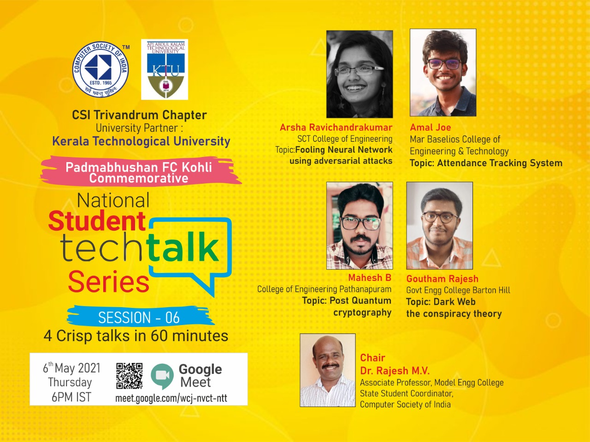

Trivandrum Chapter · Since 1976
Welcome to CSI Trivandrum
Computer Society of India (CSI) is the first, largest and most professionally managed association of and for IT professionals in India. The Trivandrum Chapter, the 11th chapter of CSI, brings the profession together through talks, training, publications and a student council.

CSI and the Trivandrum Chapter at a glance
- 1965CSI established as a non-profit society
- 1969CSI 69 convention held in Trivandrum
- 1976Chapter inaugurated on 25 June
- 11thChapter of CSI to be formed
Explore the chapter
Find the information you need.
About
CSI and the history of the Trivandrum Chapter.
Read more →Membership
Why be a member, and the application forms.
Join CSI →Office Bearers
The current committee and the roll of honour since 1976.
View the list →Events
Talks, webinars and student programmes.
See events →Publications
Chapter newsletters and photo gallery.
Browse →Student Council
The chapter's student activities site.
Visit site →Recent events on record
The latest programmes recovered from the chapter's records.